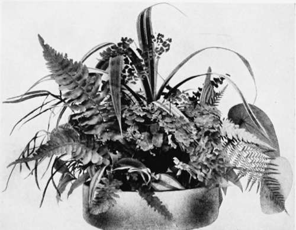

V. The Use Of Water
Description
This section is from the book "Indoor Gardening", by Eben E. Rexford. Also available from Amazon: Indoor Gardening.
V. The Use Of Water
THE question of watering plants is a perplexing one to most amateurs. They want to do this part of the work of plant-growing properly, but nowhere can they find any rules to tell them the precise amount of water to give, and the time to give it. They talk the matter over with their flower-loving friends, and derive no satisfaction because, like themselves, their friends are without rules that have anything positive about them. Each one, therefore, becomes a law unto herself. Some solve the problem satisfactorily, because they bring to its solution good judgment resulting from careful and intelligent observation, while others experiment, and go from one extreme to another, generally to the injury of their plants. These are the persons who like plants, but never take the trouble to study them in order to familiarize themselves with their requirements. Nine times out of ten their collections contain no really good plants, some very poor ones, and the majority will be of that indifferent quality which makes one wonder what pleasure their owners get from them. I do not wish to be understood as saying that faulty watering is wholly responsible for this condition of things, but it plays an important part in it.
For mixed collections of plants no definite rules can be laid down as regards watering because the plants of which they are made up differ so greatly in their requirements. One may like a very moist soil. Another may need but little moisture at its roots. The only thing to do is to study your plants until you understand them in all respects. Then you will not be at a loss as to what treatment to give them. Keep your eyes open every time you go among them. There will always be something to learn. That's one of the pleas-antest things about plant-growing. No one day's experience among them is ever quite the same as another's. It does not take long for the person who really loves her plants to learn the general principles which must govern her in her care for them, and the vexed question of how much or how little water to apply and when to apply it will soon settle itself with the intelligent amateur who really wants to learn.
The nearest I have ever come to making a rule to govern the watering of plants is this: When the surface of the soil has a dry hole, apply water. And apply enough to saturate all the soil in the pot. You can make sure about this by giving so much that a little escapes through the hole in the bottom of the pot. Unless this takes place you can never be quite sure that there is not a stratum of dry soil in the pot in which some of the roots of the plant in it will fail to secure the moisture they need. Therefore make it a rule, when applying water, to apply it liberally, keeping in mind the fact that if you have provided proper drainage there is never any danger from over-watering.
Do not water again until the dry look of which I have spoken appears on the surface of the soil. Then repeat the operation as advised above.
It will be understood, from what I have said, that there can be no set time for watering one's plants. Moisture will evaporate more rapidly from small pots than from large ones.
Much depends upon temperature, which always varies considerably; also upon exposure to fresh air, and winds, both of which help to extract moisture rapidly. In order to be sure that your plants get all the water they need, and get it when they need it, watch them, and let the appearance on the surface soil be the main thing to guide you in this part of the treatment given your plants.
If your plants are all of about the same size, and in the same-size pots, and are of the kinds usually grown in the house, a regular, daily watering may answer all purposes. But it must he readily apparent to any one who gives the matter a little thought that plants in large pots and plants in small ones can not all be given the same treatment. Here is where the good judgment gained by intelligent observation will come in play most effectively. It will be always in demand, all along the line, but more especially as regards the use of water.
The question is often asked: Which is the best, hard or soft water? I have never been able to see any difference.
What should be the temperature of the water is another question we are often called on to answer. I would have it of about the same temperature as the air in the room containing the plants to which I proposed to apply it. I do not advocate the use of hot water. It weakens the plants to which it is applied. Nature uses no hot water in her gardening operations, and she is the gardener who makes no mistakes.
Those who study their plants will discover that there are times when they do not seem to need as much water as at others. A dormant plant-the plant that is trying to take a rest- will require very little until it starts into active growth again. Then, as this growth increases, more and more water will be called for. You may not be able to tell what amount to give, from the looks of the plant, but the looks of the soil will tell you when to give it, and the elastic rule made mention of on a preceding page will enable you to adjust your treatment to the varying needs of your plants quite satisfactorily.
There are seasons of the year when evaporation takes place slowly, and at such times much less water will be required by one's plants than at others. This is especially the case in fall, when we bring our plants indoors. If, at this period, we were to make a practice of watering them daily, and liberally, we would soon drown them out, as they are in no condition to make use of as much water as the soil will hold in suspension. Therefore water sparingly, at such times, and wait for them to begin vigorous growth before using water freely on them.
Ferns and Pandanus for Table Use.
I am well aware that much of what I have said in this chapter will not be quite clear to many readers, particularly those who have not had much experience in the culture of plants in the house, but it is as plain as it can be made until they come face to face with the perplexities and problems which beset the amateur floriculturist. Then a careful reading of this chapter will enable them to more clearly understand the advice I have given, and little by little the difficulties in the way will vanish.
The use of water on plants is almost as important as the application of it to their roots, when we attempt to grow them in living-rooms. It is almost impossible to grow good plants there without applying water to their foliage in the form of a spray-"showering" we call it.
Showering answers a two fold purpose. It washes off the dust that clogs the pores of the leaves, and helps to counteract the weakening influence of a hot, dry air. One should make it a rule to shower her plants at least twice a week. Once a day would be better, for it is impossible to give them too much moisture overhead in the ordinary living-room. Showering also helps to keep down insect enemies, but that will be spoken of fully in another chapter.
Every owner of a collection of house-plants should provide herself with a small, portable spray-pump. With it she can apply water to her plants in the form of a spray as fine as mists, or she can make a genuine shower of it by a simple turn of the nozzle regulating the size and character of the stream. Such a pump is a necessity to the woman who desires to do good work among her plants. Careful manipulation of it will prevent much moisture from reaching any part of the room except that in which the plants stand. In other words, the water can be applied just where it is needed, and there will be slight danger of doing injury to carpets or walls. Sprinkling with whisk-brooms, or applying water with atomizers, as so frequently advised, is of slight benefit.
It is a good plan to give your plants a monthly washing. Take them to the kitchen or bathroom, and drench them thoroughly.
Never fall into the "little and often" habit of applying water. This consists in applying just enough to wet the surface, whenever you happen to think of it. It is a pernicious practice, for the appearance of the surface deceives you into the belief that the soil below is moist, while it may be really dry. You need not expect to grow good plants if you water them according to this method.
Continue to: